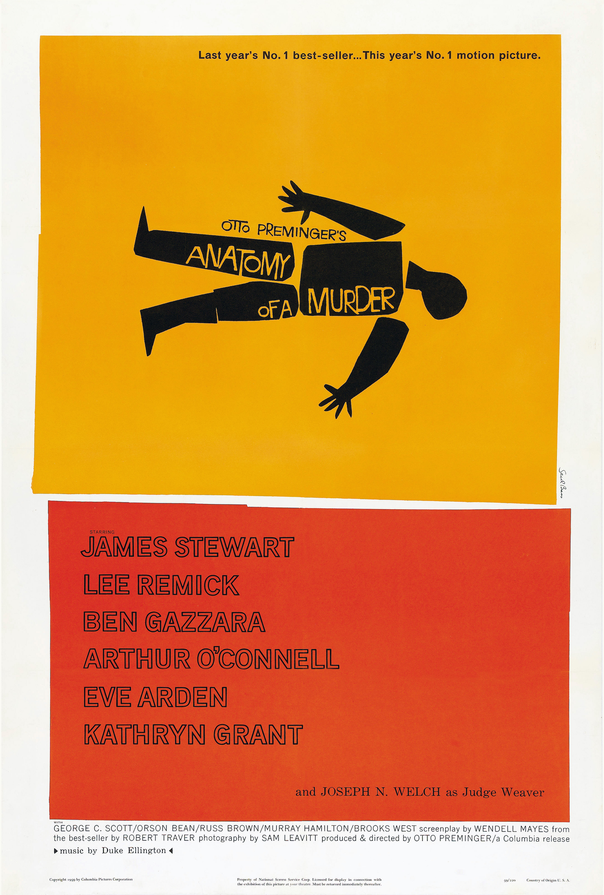
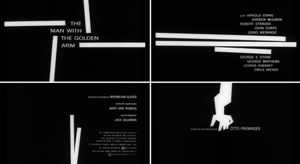
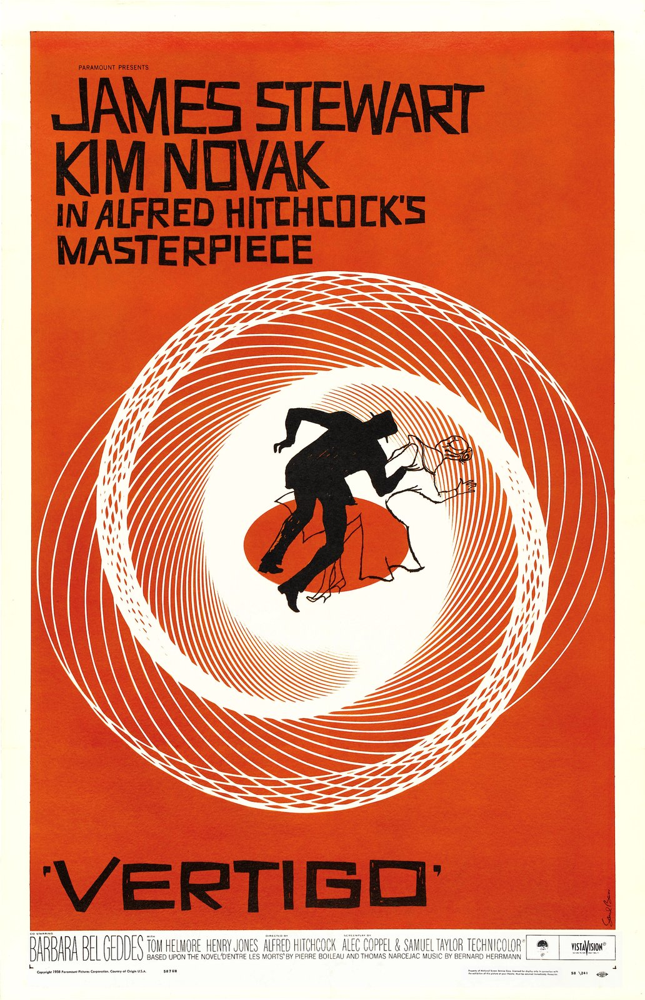
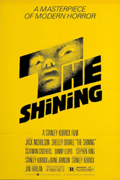

Introduction
Saul Bass, born in 1920, was one of the most iconic and influential visual communicators of the 20th century and possibly of all time. He was behind some of the most iconic corporate logos such as; Kleenex AT&T and Bell.
These designs look as modern now as they did in the 1960-1980s.
Bass grew up in New York City to Jewish immigrants. He had a creative mindset from childhood during his college years he attended night classes at Art Students League where he studied under György Kepes. This is where he learned the importance of the functional Bauhaus aesthetic.
Graphic Design in Film
Bass moved from New York to California in the 1940s. During this time, he worked mostly for advertising until his first major break when, in 1954, he was asked to design a poster for the film ‘Carmen Jones’. His poster was so highly acclaimed he was asked to do design the title credits as well.
Bass was recognised for having a sophistication in his movie poster design, this was due to his use of minimalism and he completely changed the role of title sequences within the film industry.
Before Bass, titles were projected onto the curtains before the movie began. Saul Bass saw this as very basic and static and was determined to create life and motion in these graphics, making them part of the experience for the audience along with the movie itself.
This caused him to create his signature “Kinetic Type” which involved letters moving across the screen and incorporated images as well as text.
Garamond is now considered one of the leading type designers of all time. He is recognised to this day for the elegance of his typefaces.
Bass became renowned in the film industry for not just his revolutionary title sequences but also his iconic film posters.
Bass's Role in Logo Design
Some of Saul Bass’s designs (Kose Cosmetics, designed in 1959 and Warner Communications, designed in 1972.) are still so relevant that they have not been updated by new designers The Logo he designed for United Airlines in1973 is one of his most recognisable. Pentagram, a new design team working with United in 1996 said “We were given an open brief when we began working with United, but we made one decision shortly after we began: we elected to retain the remarkable logo created for them in 1973 by Saul Bass."
Other iconic logos of Saul Bass have been “updated” since such as; AT&T, Quaker and Dixie, some of these logo updates were not well received within the design community who indicated that they were more dated than Bass’s originals.
Bass’s influence cannot be understated as he created identities for around 80 major corporations in his time along with his ground-breaking work with film title sequences and posters. The fact that many of these logos and identities took years to redesign, if redesigned at all, perfectly represents how both influential and ahead of his time Saul Bass was. Even some of his earliest designs from the 60s look as modern or in some cases more modern than the redesigns. The ‘Dixie’ design in particular looks far more dated even though designed in late 2000s than Saul Bass’s late 60s version.
Saul Bass and his Influence
Saul Bass was once quoted as saying
‘Design is thinking made visual’What I have learned form this is that a good poster or logo design should make the user understand the film or company intuitively as the “thinking” is done for them by the design.
We can see Saul Bass’s quote in action in his most influential designs. Such as;
This poster and the subsequent title sequence is one of my favourite designs of Bass’s I enjoy the colours used and the contrast between the light orange background and text with the solid black outline of a body
This title sequence was the beginning of Saul Bass’s title sequence design career. Within this sequence, white lines of different lengths flow across screen around credits. This has been replicated in many ways since and became one of the cornerstones of 50s/60s movie design.
This poster for the famous Alfred Hitchcock movie, I think is incredible. The fun spiral design along with the duplicate outline of the man emphasises the feeling of vertigo in the viewer. It gives a subtle insight to what the movie will be about, and the minimal colour choice helps these elements stand out.The wilder ununiform font also ties into the theme of vertgio and loss of control
The Shining poster Is a later design of Bass’s but is still fully recognisable as one of his works. Then bright yellow background really demands the viewers attention. This poster is incredibly minimal and contains mostly the title and film credits. However, within the ‘T’ is an unsettling image of a doll-like face which adds an element of eeriness to an otherwise fairly neutral poster. Associating the film with a normal surface layer with an intrusive scary layer underneath.
